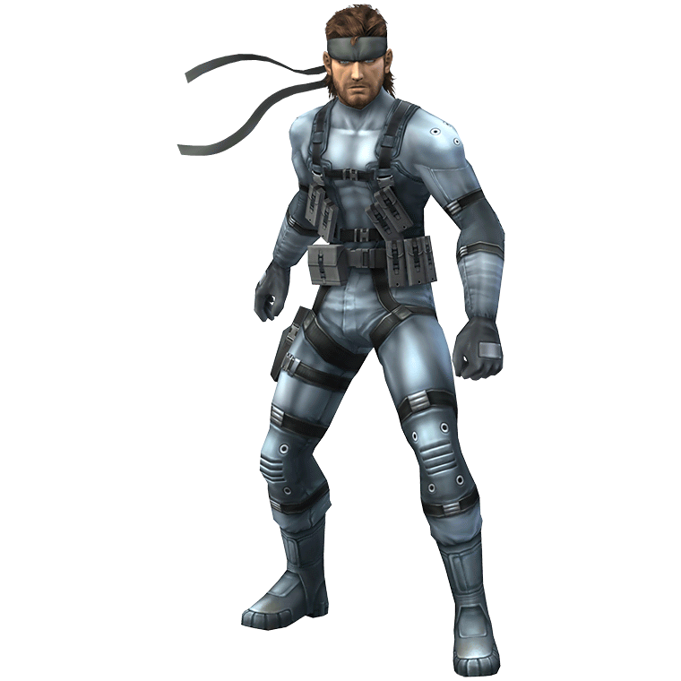
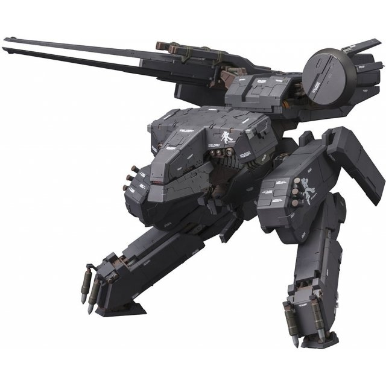

Metal Gear Solid is a stealth game series described as "tactical espionage action." The main concept of the game is to avoid detection by your enemies by any means necessary instead of facing them head-on, otherwise known as stealth. This allows for interesting and unique game mechanics that force you to use your environment and think outside the box. The first game, released for the Playstation 1 in 1998, is about a secret agent that goes by the code name 'Solid Snake.' He is tasked to travel to Shadow Moses Island and destroy the nuclear weapon called 'Metal Gear.' At the end of the game Snake discovers that he is a clone of a legendary soldier called 'Big Boss.'
Solid Snake Solid Snake possesses many skills that aid him in his missions, such as advanced combat training and knowledge. |
|---|
Metal Gear Rex Each Metal Gear Solid game has a unique metal gear. Metal gears are bipedal robots that have the capability to launch and detonate nuclear warheads. |
Nathan Morales
Period 1